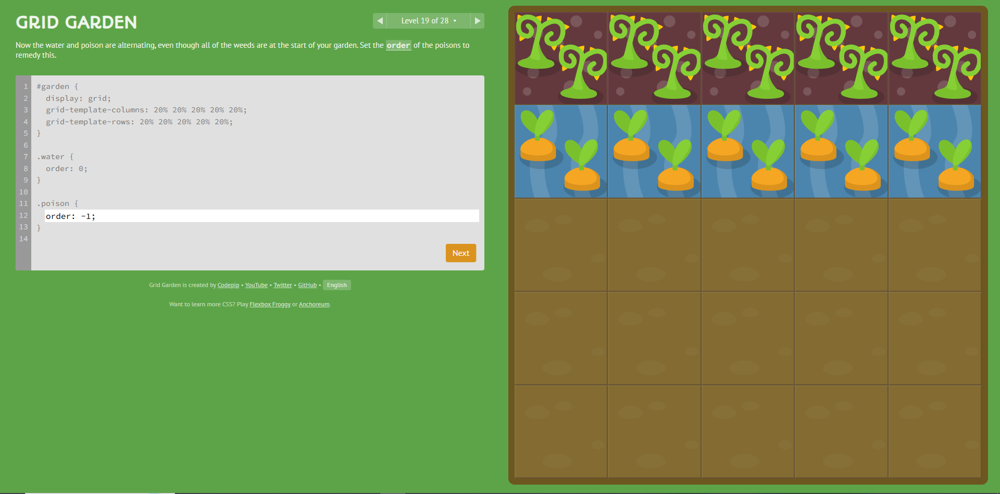

Concluí o jogo Grid Garden:
Print da fase 19:

Nessa fase foi utilizada a propriedade orderpara mudar a ordem dos elementos dentro do Grid
O código utilizado foi:
#garden {
display: grid;
grid-template-columns: 20% 20% 20% 20% 20%;
grid-template-rows: 20% 20% 20% 20% 20%;
}
.water {
order: 0;
}
.poison {
order: -1;
}
O order: 0 deixa a água na ordem normal, o order: -1 faz os venenos ficarem antes dos elementos que possuem uma ordem maior.
Assim, os elementos ficam na ordem necessária para completar a fase.